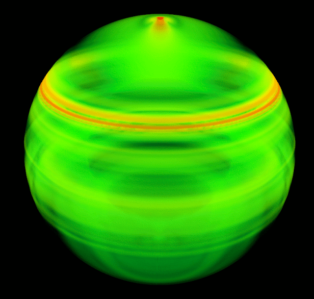

After my previous post about volume data blender, here is the final render:
Basically the smoke density corresponds to the magnitude of displacement in the interior of the Earth after a quake. The core of the Earth is shown as glassy blue sphere. It takes some tweaking of the smoke parameters in blender to get it to look nice. The calculations were done with the spectral element code Specfem3D Globe. Render time was ~4h on my laptop, mostly because of the mirror and transparency effects of the core.
Here is a similar image rendered with paraview:

It is clear that the advanced lightning possibilities in blender can greatly enhance the 3D impression of the image.